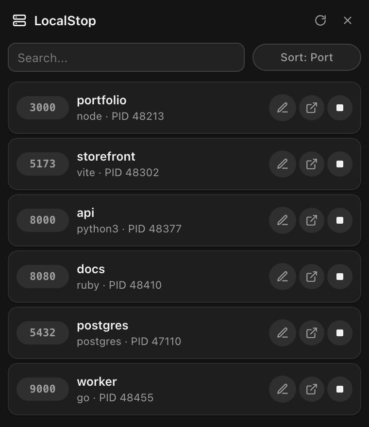

See
Lists every TCP port listening for your user, with process name and PID. System helpers are filtered out.
See the local servers running on your machine. Stop, rename, or open one in a click.


Pick your platform. Direct downloads, no account.
Builds are unsigned. On macOS, right-click LocalStop and choose Open the first time. On Windows, SmartScreen may ask for confirmation. Linux builds target glibc 2.39 (Ubuntu 24.04+).
Lists every TCP port listening for your user, with process name and PID. System helpers are filtered out.
Sends SIGTERM, waits, then escalates to SIGKILL. On Windows it ends the process tree with taskkill.
Rename any port once and the label persists. Search by port, command, PID, or your own name.